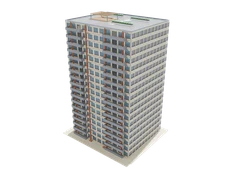
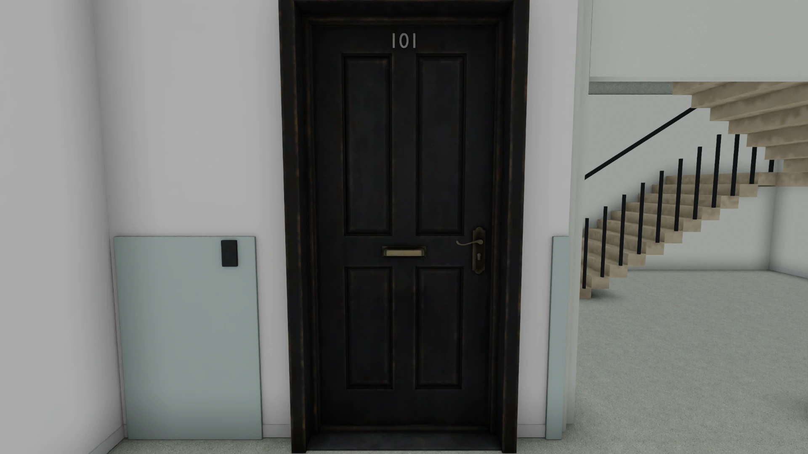
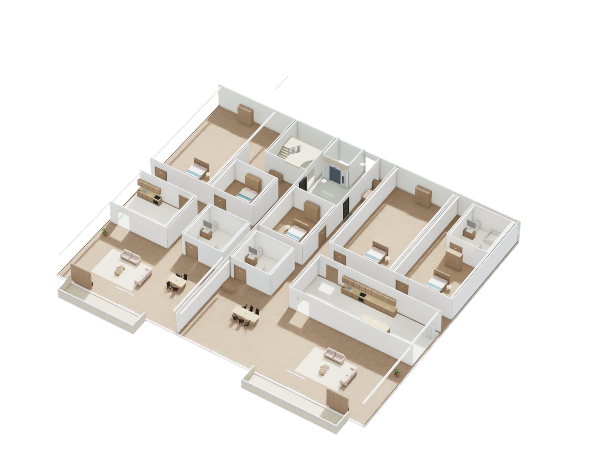

单电梯住户层到达
使用唯一的 E1 从一楼到指定住户层并完整驶出；不要求切换第二部电梯。
通用任务 · 双本体验证待完成ENVIRONMENT 07 / 9
07ONE LIFT · TWO HOMES PER FLOOR
TWO HOMES, EVERY FLOOR
Open north-up layout diagram ↗
X home: smaller two-bedroom home, one bathroom, small kitchen, dining and a south-facing balcony.
Y home: about 1.5× the area, three bedrooms, two bathrooms, large kitchen, dining and a south-facing balcony. The primary bathroom has a separate shower and bathtub.
The X and Y plans repeat unchanged from L01 to L18. Two security doors face each other across a compact north-side entrance hall beside E1. The stair and lift core occupies about 6.7% of the main floor plate.


Interior
INSIDE THE ENVIRONMENT
Select a level to explore its interior.

CAPABILITIES & EMBODIMENTS
通用任务面向 FWMiniPiper 与 G1；专用任务测试指定本体的特有能力。当前均为待验证设计，不表示已完成物理执行。
十八层重复 X 与 Y 户型，各层有包裹柜、入户柜、客厅与厨房点位。楼层特色是楼层户号和户型定位，功能相同的楼层变化归为实例。
使用唯一的 E1 从一楼到指定住户层并完整驶出；不要求切换第二部电梯。
通用任务 · 双本体验证待完成唯一 E1 初始暂不可用；根据公开提示等待预设有限时间的恢复，再重新呼梯到指定住户层；不要求第二部梯。
通用任务 · 双本体验证待完成需绑定可复现停运或恢复初态、可见提示、可行时间预算和通行历史裁判；恢复不得依赖无限等待或策略可调用的调试接口。
尚未启用正式评测；需完成初态配置、成功判据及指定本体的完整物理轨迹验证。
在任务明确授权且初始解锁的 X 或 Y 户入口门完成开门、进出及关门。
通用任务 · 双本体验证待完成在一楼 Parcel Cabinet 交接台的新增小件柜上滑开门，再关闭；不要求身体进入柜内。
通用任务 · 双本体验证待完成已安装独立滑门柜；与入户铰链门分开测试，夹爪操作与裁判待验收。
尚未启用正式评测；需完成初态配置、成功判据及指定本体的完整物理轨迹验证。
从门已打开的住户区域，将指定灯设为请求状态；不操作无关设备。
通用任务 · 双本体验证待完成在本场景指定可达空调面板上观察初态，将开关、模式和设定值改为任务要求；至少一项需改变，其他设备不变。评分使用面板与控制器实际状态，不要求室温达到设定温度。
通用任务 · 双本体验证待完成需验证两种夹爪不误触相邻按键，并接入模式、开关和设定值裁判；不把按钮几何存在当作可按或热效果证据。
尚未启用正式评测；需完成初态配置、成功判据及指定本体的完整物理轨迹验证。
将一楼包裹柜的两件物品分别送到二楼 X 户 201 和十八楼 Y 户 1802 入户柜，核对完整楼层和户号。
通用任务 · 双本体验证待完成需按本任务配置动态物品、身份或数量标签、交接与暂放区域及指令专属历史判据；源站点存在不代表新任务初态已实现。
尚未启用正式评测；需完成初态配置、成功判据及指定本体的完整物理轨迹验证。
在授权且门开放的二楼 X 户客厅找到描述小件，放到该户 Entry Storage，保护其他物品。
通用任务 · 双本体验证待完成需按本任务配置动态物品、身份或数量标签、交接与暂放区域及指令专属历史判据；源站点存在不代表新任务初态已实现。
尚未启用正式评测；需完成初态配置、成功判据及指定本体的完整物理轨迹验证。
从十八楼 Y 户 Living Console 取退件，送到同层 Parcel Cabinet，再关闭请求的灯和使用过的门。
通用任务 · 双本体验证待完成需按本任务配置动态物品、身份或数量标签、交接与暂放区域及指令专属历史判据；源站点存在不代表新任务初态已实现。
尚未启用正式评测；需完成初态配置、成功判据及指定本体的完整物理轨迹验证。
仅从二楼 Y 户 Kitchen Pickup 取指定密封包装送到一楼 Parcel Cabinet；X 户相似物品不得移动。
通用任务 · 双本体验证待完成需按本任务配置动态物品、身份或数量标签、交接与暂放区域及指令专属历史判据；源站点存在不代表新任务初态已实现。
尚未启用正式评测；需完成初态配置、成功判据及指定本体的完整物理轨迹验证。
打开一楼新增小件柜取目标包裹，关柜门，再用唯一电梯送至二楼 X 户入户柜；不要求第二部电梯或双手并发。
通用任务 · 双本体验证待完成需按本任务配置动态物品、身份或数量标签、交接与暂放区域及指令专属历史判据；源站点存在不代表新任务初态已实现。
尚未启用正式评测；需完成初态配置、成功判据及指定本体的完整物理轨迹验证。
本场景暂无专用任务。两种本体均可使用上方通用任务候选。